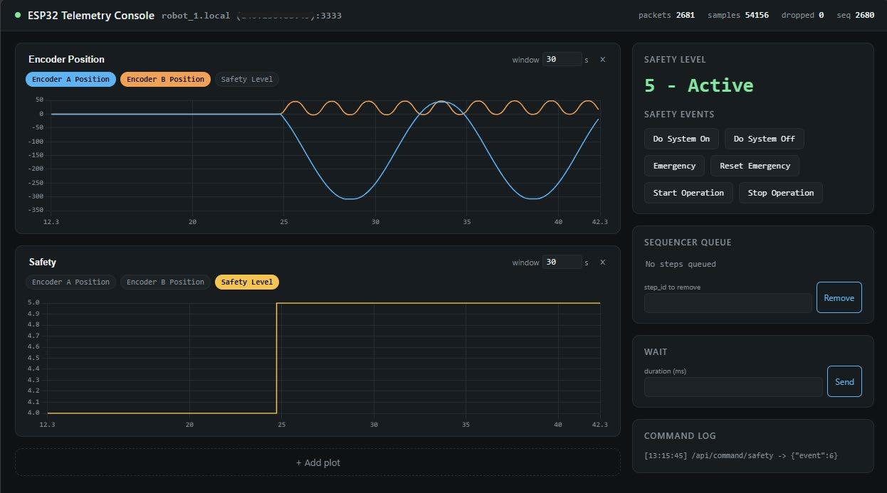

- Generated by
 1.18.0
1.18.0
|
Mobiler Ausbildungsroboter
|
The web GUI runs on your PC and shows the data the robot sends (telemetry) as live plots in your browser. You also use it to send commands to the robot, e.g. to change the safety level.

Open a terminal in VS Code (Ctrl+J). It opens in your project folder.
1. Go to the GUI folder and create a virtual environment:
2. Activate the virtual environment:
| System | Command |
|---|---|
| Windows (PowerShell) | .venv\Scripts\activate |
| macOS / Linux | source .venv/bin/activate |
The terminal now shows (.venv) at the beginning of the line. If PowerShell reports running scripts is disabled on this system, see Troubleshooting.
3. Install the required packages:
4. Enter the address of your robot: in the folder host_interface/, copy the file esp32_config.json.example and name the copy esp32_config.json. Open it and enter the hostname of your robot followed by .local:
The hostname must match UDP_INTERFACE_HOSTNAME in include/config.h (Quick Start, Step 6). Instead of the hostname, you can also enter the robot's IP address, which the robot prints in the Serial Monitor (Got IP: ...).
In the VS Code terminal, run:
Then activate the virtual environment (see the table above) and start the GUI:
The terminal shows Connected to ESP32 at ... when the GUI has started. To stop the GUI, click into the terminal and press Ctrl+C.
| Area | What it does |
|---|---|
| Plots (left) | Live plots of the telemetry. Click the signal chips to choose which signals a plot shows, and change the time window (seconds). + Add plot adds another plot, × removes one. |
| Safety Level | The current safety level of the robot. |
| Safety Events | Buttons that send a safety event to the robot, e.g. Start Operation. After start-up, the robot is in the level Ready. The motors only run in the level Active. |
| Sequencer Queue | The steps waiting in the sequencer, each with its step_id. Enter a step_id and click Remove to remove a step. |
| Wait | Adds a wait step with the given duration (ms) to the sequencer. |
| Command Log | All commands sent to the robot. |
See WiFi and web GUI in Troubleshooting.
In some exercises, you send other values to the PC or add new commands. Then the GUI has to be adapted as well. All places you need to change are listed in the host interface guide.